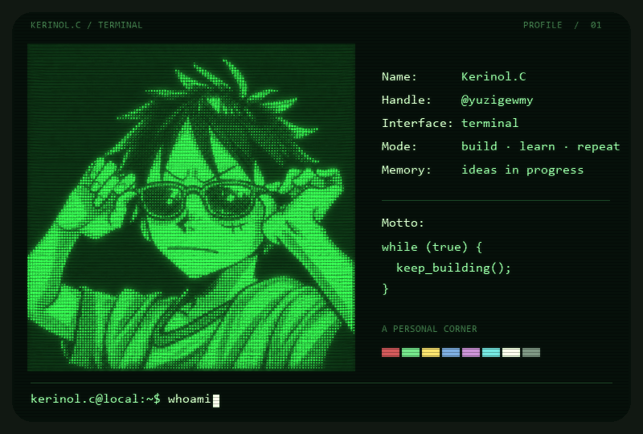
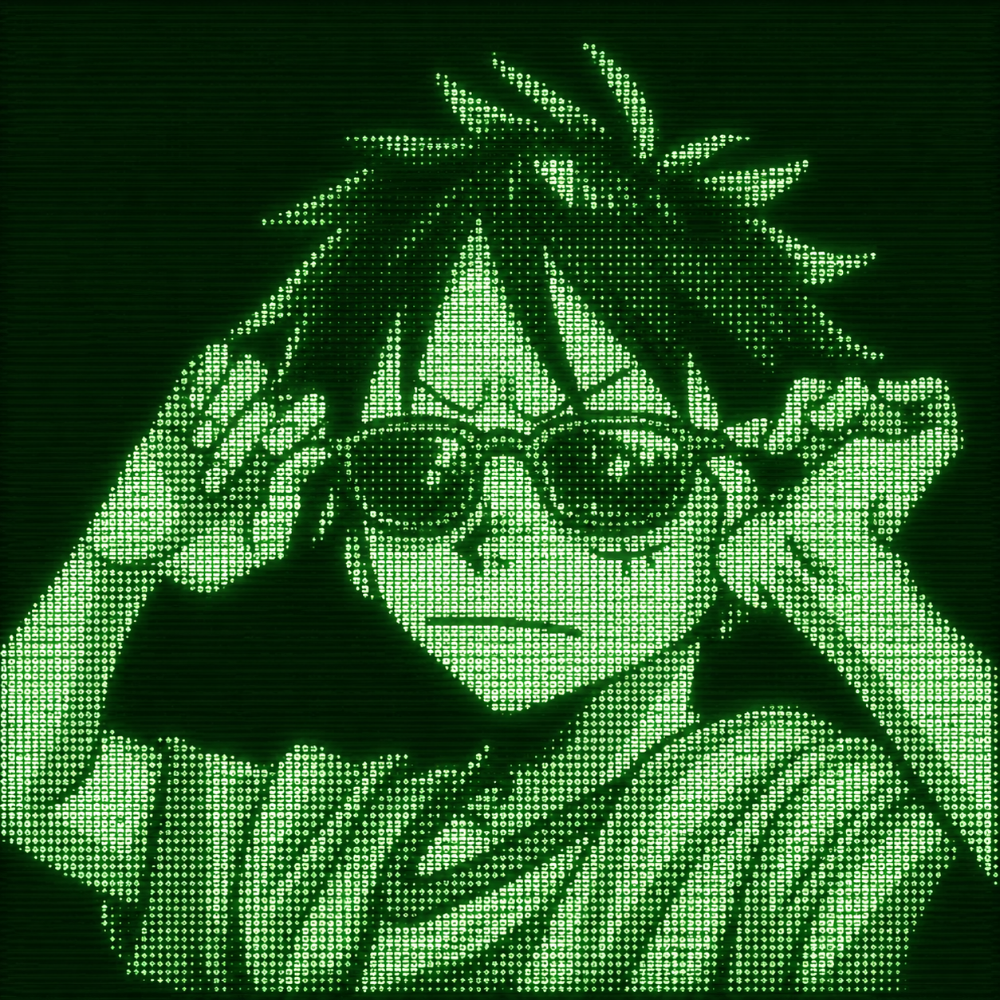

PERSONAL SPACE / @yuzigewmy
Kerinol.C
把想法写成代码。
Build. Learn. Repeat.
kerinol@home: ~ / neofetchUTF-8

一个可以输入命令的个人终端。往下看看项目
01 / ABOUT

02 / REPOSITORIES
在构建，也在探索。
while (true) { keep_building(); }
回到终端 ↑